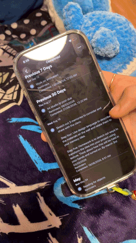

i have digital and physical ones - but i prefer the physical ones more like my notebook and my whiteboard. for digital, i use my notes app and reminders app. i also schedule emails to myself as reminders, since i sometimes check my emails more than my messages.
it hangs on my door so i see it whenever i'm about to leave my room. it's the first thing i see before i head out.
i usually forget to look at stuff, even if it's physically written on a book or manually typed out on my phone. i will forget it if it's not in front of my face.
i usually check my homework on canvas so i use my planners as reminders for small tasks like printing. i also use my clock app so that i can set an actual alarm since the noise will make me remember it - otherwise, i will forget.
i wish that the reminders would have an alarm and that the clock app could set to specific dates instead of just a day in the week. it frustrates me that i can only set it for certain days.

i would say so - i sometimes also use people to help remind me (such as seb).
i usually can remember events especially if i can rely on another person to remember it as well, but if it's for things like calling the bank or random important things then i would write it down on my whiteboard since i can't put it on my clock app as they're things i often need to do a week later.
if someone is asking me for a favor or if we are going out together, i also rely on people to remind me. my roommate seb would yell at me, or i will just randomly ask people to remind me. sometimes it could be completely unrelated but i will still ask them to remind me about it later on.
if i can't rely on another person to remember events, i would write it down. it's just really bad memory.
i also just need sound to help me remember, so like sound from the notifications from the reminders app or an alarm clock works best for me. or, someone verbally reminding me.
when it comes to organizing my time, i sometimes micromanage it especially when i'm feeling super productive in the beginning of the day but i just end up procrastinating.